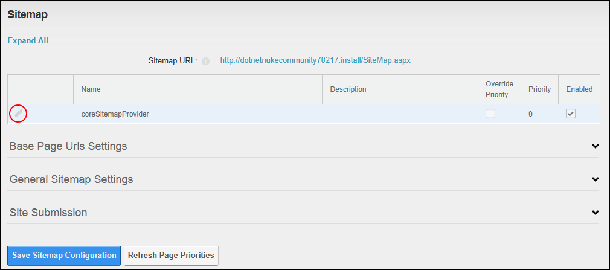

Setting the SiteMap Providers
How to enable and configure one or more SiteMap providers to be used for your DNN site. DNN comes with a default provider named coreSitemapProvider. It also uses a provider model to allow third-party modules to participate in SiteMap generation.
Tip: Providers should be added at installation. See "Creating a Custom Installation Setup"
- Navigate to Admin > Advanced Settings >
 Search Engine Site Map - OR - Go to a Sitemap module.
Search Engine Site Map - OR - Go to a Sitemap module.
- Below the Sitemap URL field, you can view details SiteMap provider that is in use on this site.
- Click the Edit
 button beside the Sitemap Provider to be modified.
button beside the Sitemap Provider to be modified.

- At Enabled, select from these options:
- to enable this SiteMap provider. If only one provider is enabled, skip to Step 5.
- Optional. At Override Priority, to override the priority given to pages crawled by a SiteMap provider - OR - to use the priority given to pages crawled by a SiteMap provider.
- Optional. In the Priority text box, enter a numerical value to set the priority for this provider.
- .to disable it.
- Click the Update
 button.
button.